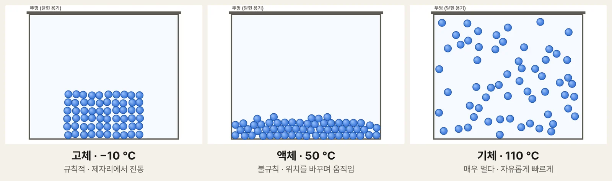

입자 운동 시뮬레이터
가열·냉각에 따라 입자 배열과 운동이 바뀌고, 가열 곡선 위에서 녹는점·끓는점의 «온도가 일정한 구간»을 함께 보는 한 파일 웹페이지를 Code 탭으로 만듭니다.
- 목표
- «가한 열» 하나로 입자 모형·온도·가열 곡선·상태 변화 이름·열 출입이 함께 바뀌는 시뮬레이터를 만든다 (예시: 중학교 과학 — 물질의 상태 변화, P1 계획표의 2·4·6차시)
- 준비물
- P1에서 만든
물질의상태변화/02_시뮬레이터폴더 (비어 있어도 됨) - 결과물
index.html한 파일 — 외부 라이브러리·인터넷 없이 열림, 학생 질문 3개, 단순화한 점 표시- 주의
- 과학 개념의 정확성은 교사가 확인 · 물이 얼 때 부피가 늘어나는 예외처럼 모형과 다른 점을 화면에 밝히기
만드는 방법은 6차시 달의 위상 시뮬레이터와 같습니다(Plan → Manual). 다른 점은 보여 줄 것이 여럿이라는 것입니다. 입자 그림·온도·그래프·상태 변화 이름·열 출입이 따로 움직이면 오히려 헷갈립니다. 그래서 핵심은 «가한 열» 값 하나로 모든 그림을 움직이게 하는 것입니다. 온도 슬라이더로 만들면 0 °C에서 «얼음»과 «물»을 구별할 수 없지만, 가한 열로 만들면 온도는 그대로인데 상태가 바뀌는 구간이 저절로 생깁니다.
먼저 볼 영상

1 준비
- P1에서 만든
클로드연수/단원프로젝트/물질의상태변화/02_시뮬레이터폴더가 있는지 봅니다. 없으면 같은 이름으로 빈 폴더를 만듭니다. - Code 탭을 처음 쓴다면 연수 전 점검의 데스크톱 앱 설치와 5차시를 먼저 봅니다. Code 탭은 따로 설치하지 않습니다.
2 따라 하기
번호 순서대로 진행합니다. 프롬프트가 필요한 단계에는 바로 아래에 복사 단추가 있습니다.
- 데스크톱 앱 사이드바 맨 위의 Code 탭을 누릅니다.
- 프롬프트 상자 아래 줄에서 환경은 Local 묶음의 맨 위 항목, 폴더는 Open folder… 로
02_시뮬레이터, 권한 모드는 Plan 을 고릅니다. 고르는 곳은 6차시 2~4번 그림과 같습니다. - 계획을 받습니다. 아래 프롬프트를 보내고 계획을 읽습니다.
중학교 과학 '물질의 상태 변화' 수업에서 쓸 입자 운동 시뮬레이터를 만들려고 합니다. 먼저 계획만 세워 주세요. 요구 사항 - index.html 한 파일. 외부 라이브러리·글꼴·인터넷 없이 열려야 함 - 닫힌 용기 속 물(1기압). 온도 슬라이더가 아니라 «가한 열» 슬라이더와 가열·냉각·멈춤 단추 - 왼쪽: 입자 모형 — 고체는 규칙적 배열·제자리 진동, 액체는 불규칙·위치를 바꾸며 움직임, 기체는 멀리 떨어져 자유롭게 움직임 - 오른쪽: 가열 곡선(냉각할 때는 냉각 곡선)과 지금 위치를 나타내는 점. 0 °C와 100 °C에서 온도가 일정한 구간 - 지금 온도, 상태(«고체 + 액체»처럼 섞인 상태 포함), 일어나는 상태 변화 이름과 «열에너지를 흡수/방출» 표시 - 상태 변화 6가지 도식에서 지금 일어나는 변화를 강조 (승화는 «승화(고체→기체)», «승화(기체→고체)»로 방향을 함께) - 열 흡수는 빨강, 열 방출은 파랑 (색만으로 구별하지 않게 글자도 함께) - 입자의 크기와 개수는 어떤 상태에서도 같게 (질량이 변하지 않음을 보이기) - 아래에 학생이 생각해 볼 질문 3개 - 교실 TV에서도 읽히게 큰 글자, 휴대폰에서는 위아래로 배치, 키보드로도 조작 가능 - 단순화한 점을 화면 아래에 밝히기 (물이 얼 때 부피가 늘어나는 예외, 기체 입자 사이 거리, 그래프 구간 길이, 끓는점보다 낮은 온도의 증발) 계획에는 화면 구성, 가한 열에서 온도·상태를 계산하는 방법, 다 만든 뒤 확인할 방법을 적어 주세요.
«온도 슬라이더가 아니라 가한 열 슬라이더»가 이 쪽의 핵심 문장입니다. 계획의 «계산하는 방법»에 «가한 열이 몇에서 몇까지는 0 °C로 일정»처럼 구간이 나와야 맞습니다. 단순화한 점을 미리 적어 두면, 물은 얼음일 때 부피가 더 커지는 예외처럼 모형으로 그리기 어려운 내용을 화면에서 솔직하게 밝힙니다.
캡처 넣을 곳 · P3-1
Plan 모드의 계획 (따라 하기 3번).- 계획 전체가 보이게
- 빨간 상자: 가한 열 → 온도·상태 계산 구간(0 °C·100 °C에서 일정)
- 계획을 읽고 고칠 점은 말로 고칩니다. 예: «입자는 60개로», «가열 단추를 한 번 누르면 계속 가열되고 다시 누르면 멈추게»
- 권한 모드를 Manual 로 바꾸고 만들기를 맡깁니다. 바뀔 내용과 승인 단추가 나오면 승인합니다.
계획대로 만들어 주세요. 다 만들면 앱 안 브라우저 창에서 열어 직접 확인하고, 가열하며 −10 °C, 0 °C(녹는 중), 50 °C, 100 °C(끓는 중), 110 °C 일 때와 냉각하며 100 °C·0 °C 를 지날 때 화면에 나오는 상태 · 상태 변화 이름 · 열 출입을 표로 정리해 알려 주세요.
정해 둔 지점에서 화면을 표로 받으면, 교사가 시뮬레이터를 한참 움직여 보지 않아도 개념이 맞는지 먼저 훑을 수 있습니다. 특히 냉각할 때 «응고·액화 — 방출»로 바뀌는지가 자주 틀립니다.
캡처 넣을 곳 · P3-2
확인 표 (따라 하기 5번).- 빨간 상자: 냉각할 때 0 °C 줄의 «응고 · 방출»
- 대화창에 나온
index.html경로를 누르면 앱 안 브라우저 창에서 열립니다. 가열·냉각 단추와 슬라이더를 직접 움직여 봅니다.캡처 넣을 곳 · P3-3
앱 안 브라우저 창 (따라 하기 6번).- 녹는 중(0 °C)이나 끓는 중(100 °C) 화면이면 좋음
- 아래 프롬프트로 과학 내용을 검수하게 하고, 고칠 점은 하나씩 요청합니다.
과학 내용을 검수해 주세요. 1. 가열할 때 0 °C 융해·100 °C 기화(끓음)는 «흡수», 냉각할 때 100 °C 액화·0 °C 응고는 «방출»로 나오는지 2. 상태가 변하는 동안 그래프와 온도 숫자가 정말 일정한지 3. 입자의 수와 크기가 상태에 따라 바뀌는 곳이 없는지 4. 고체 입자는 제자리에서 진동만 하고, 기체 입자는 용기 전체에 퍼지는지 5. 상태 변화 이름과 설명이 중학교 교과서 용어와 다른 곳이 있는지 틀린 곳은 고치고, 고친 내용을 한 줄씩 알려 주세요.
- 파일 탐색기(맥은 Finder)에서
02_시뮬레이터/index.html을 더블클릭해 크롬·엣지에서도 열어 봅니다. P6에서 이 파일을 허브 페이지로 묶습니다.
3 결과 예시
![밝은 바탕의 입자 운동 시뮬레이터 화면. 왼쪽 «입자 모형»에는 뚜껑 덮인 용기 바닥에 규칙적으로 쌓인 입자 덩어리가 있고, 위쪽 일부 입자는 덩어리에서 떨어져 바닥에 흩어져 있다. 아래에 «입자 수 60개 — 상태가 바뀌어도 입자의 수와 크기는 그대로입니다». 오른쪽 «가열 곡선»은 −20 °C에서 시작해 0 °C와 100 °C에서 수평이고 120 °C까지 오르는 그래프로, 노란 점이 0 °C 수평 구간 가운데에 있고 «융해 · 녹는점 0 °C», «기화(끓음) · 끓는점 100 °C» 이름이 붙어 있다. 그 아래 큰 글씨 «0 °C 고체 + 액체 (얼음과 물)»와 주황 상자 «융해 — 열에너지를 흡수 · 흡수한 열이 입자 배열을 바꾸는 데 쓰여, 다 녹을 때까지 온도가 0 °C로 일정합니다». 가운데에 가열·냉각·멈춤 단추와 «가한 열» 슬라이더, 아래 왼쪽에 고체·액체·기체 사이 화살표 여섯 개(융해 · 흡수가 굵게 강조), 오른쪽에 생각해 보기 질문 3개, 맨 아래 «단순화한 점» 6줄.](assets/img/p3-sim.webp)

4 검증 포인트
② 열 출입 — 가열 중 0 °C는 «융해 · 흡수», 100 °C는 «기화 · 흡수», 냉각 중 100 °C는 «액화 · 방출», 0 °C는 «응고 · 방출»로 바뀌는지 봅니다.
③ 입자 수와 크기 — 어느 상태에서나 같은지 봅니다. 질량이 변하지 않는다는 설명의 근거입니다.
④ 배열과 운동 — 고체는 제자리 진동만, 액체는 바닥 쪽에서 자리를 바꾸며, 기체는 용기 전체로 퍼지는지 봅니다.
⑤ 승화 — 도식에 방향과 함께 적혀 있고, 1기압의 물 가열에서는 나오지 않는다는 설명이 있는지 봅니다.
⑥ 단순화 표시 — 물의 예외, 기체 입자 사이 거리, 그래프 구간 길이, 끓는점보다 낮은 온도의 증발이 화면에 밝혀져 있는지 봅니다.
⑦ 교실에서 — 와이파이를 끄고 열리는지, 교실 TV 뒷자리에서 글자가 읽히는지, Tab 과 화살표 키로 슬라이더가 움직이는지 봅니다.
⑧ 질문 — 학생 질문 3개를 이 시뮬레이터만 보고 실제로 답할 수 있는지 교사가 풀어 봅니다.
5 다른 단원에 적용하기
따라 하기 3단계 프롬프트 1 대신 아래 교과 단원 프롬프트를 씁니다. 폴더는 P1에서 만든 02_탐구도구 를 고릅니다. 교과마다 «다 만든 뒤 확인할 것»을 넣어 두었으니, 5단계와 7단계는 아래 공통 프롬프트로 바꿔 씁니다. 자료가 필요한 사례는 교사가 확인한 자료 파일을 폴더에 함께 넣어 줍니다.
계획대로 만들어 주세요. 다 만들면 앱 안 브라우저 창에서 열어 직접 확인하고, 계획의 «다 만든 뒤 확인할 것»을 하나씩 점검한 결과를 표로 알려 주세요.
내용을 검수해 주세요. 1. 계획의 «다 만든 뒤 확인할 것»을 다시 하나씩 점검 2. 교과서 용어와 다른 표현이 있는지 3. 학생이 오해할 만한 그림이나 설명이 있는지 틀린 곳은 고치고, 고친 내용을 한 줄씩 알려 주세요.
국어표현 바꾸기 탐구 도구같은 대상을 직유·은유·의인으로 바꿔 보는 카드
중학교 국어 '비유와 상징' 수업에서 쓸 표현 바꾸기 탐구 도구를 만들려고 합니다. 먼저 계획만 세워 주세요. 요구 사항 - index.html 한 파일. 외부 라이브러리·글꼴·인터넷 없이 열려야 함 - 대상 카드(달, 바람, 시간 등)를 고르면 직유·은유·의인 예문이 차례로 나옴 - 예문과 설명은 첨부한 예문.txt 만 쓰고 지어내지 않기 - 표현 방법 이름을 누르면 뜻과 «원관념·보조관념» 표시 - 아래에 학생이 생각해 볼 질문 3개 - 교실 TV에서도 읽히게 큰 글자, 휴대폰에서는 위아래로 배치, 키보드로도 조작 가능 - 실제와 다르게 단순화한 점은 화면 아래에 밝히기 다 만든 뒤 확인할 것 - 직유 예문에만 «~처럼, ~같이» 같은 연결하는 말이 있는지 - 표현 이름이 교과서 용어와 같은지 계획에는 화면 구성, 예문 파일을 대상·표현 방법별로 나누는 방법, 위의 확인 방법을 적어 주세요.
수학일차함수 그래프 탐구기기울기·y절편 슬라이더로 그래프와 식이 함께 바뀜
중학교 수학 '일차함수와 그래프' 수업에서 쓸 일차함수 그래프 탐구기를 만들려고 합니다. 먼저 계획만 세워 주세요. 요구 사항 - index.html 한 파일. 외부 라이브러리·글꼴·인터넷 없이 열려야 함 - 기울기 a, y절편 b 슬라이더 (−5~5, 0.5 간격) - 좌표평면에 y = ax + b 그래프와 식, x절편·y절편 점 표시 - 기울기를 직각삼각형(가로 1칸, 세로 a칸)으로 함께 보이기 - 식과 그래프 표기는 교과서처럼 쓰기 (예: y = 2x − 1), 계산값은 스스로 검산하기 - 아래에 학생이 생각해 볼 질문 3개 - 교실 TV에서도 읽히게 큰 글자, 휴대폰에서는 위아래로 배치, 키보드로도 조작 가능 - 실제와 다르게 단순화한 점은 화면 아래에 밝히기 다 만든 뒤 확인할 것 - a = 2, b = −1 일 때 그래프가 (0, −1)과 (1, 1)을 지나는지 - a < 0 이면 오른쪽 아래로 내려가는 직선인지 - 식이 y = 2x − 1 꼴로 표시되는지 계획에는 화면 구성, a·b 값으로 그래프와 절편을 계산하는 방법, 위의 확인 방법을 적어 주세요.
영어동사 변신 탐구기동사를 고르면 현재형·과거형과 규칙/불규칙 표시
중학교 영어 '과거 시제로 경험 말하기' 수업에서 쓸 동사 변신 탐구기를 만들려고 합니다. 먼저 계획만 세워 주세요. 요구 사항 - index.html 한 파일. 외부 라이브러리·글꼴·인터넷 없이 열려야 함 - 동사 카드를 고르면 현재형 → 과거형으로 바뀌는 애니메이션과 예문 - 규칙/불규칙 표시, 규칙 동사는 어떤 규칙인지(-ed, -d, y → ied 등) - 동사와 과거형은 첨부한 동사표.csv 만 쓰기 - 아래에 학생이 생각해 볼 질문 3개 - 교실 TV에서도 읽히게 큰 글자, 휴대폰에서는 위아래로 배치, 키보드로도 조작 가능 - 실제와 다르게 단순화한 점은 화면 아래에 밝히기 다 만든 뒤 확인할 것 - 과거형이 첨부한 동사표와 모두 같은지 - 규칙 동사의 규칙 설명이 맞는지 (study → studied 등) 계획에는 화면 구성, 동사표를 읽어 규칙·불규칙으로 나누는 방법, 위의 확인 방법을 적어 주세요.
과학기체 법칙 탐구기피스톤과 온도를 바꾸면 입자 충돌과 부피·압력이 바뀜
중학교 과학 '기체의 압력·온도와 부피' 수업에서 쓸 기체 법칙 탐구기를 만들려고 합니다. 먼저 계획만 세워 주세요. 요구 사항 - index.html 한 파일. 외부 라이브러리·글꼴·인터넷 없이 열려야 함 - 피스톤 슬라이더(부피)와 온도 슬라이더, 한 번에 하나만 바꾸는 모드 - 상자 안 입자 운동 애니메이션, 벽에 부딪친 횟수와 압력 표시 - 부피–압력 그래프(온도 일정), 온도–부피 그래프(압력 일정) - 입자 수는 언제나 같게 - 법칙에는 «온도 일정», «압력 일정» 조건을 언제나 함께 적기 - 아래에 학생이 생각해 볼 질문 3개 - 교실 TV에서도 읽히게 큰 글자, 휴대폰에서는 위아래로 배치, 키보드로도 조작 가능 - 실제와 다르게 단순화한 점은 화면 아래에 밝히기 다 만든 뒤 확인할 것 - 온도 일정에서 부피를 절반으로 줄이면 압력이 약 두 배가 되는지 - 압력 일정에서 온도를 높이면 부피가 커지는지 - 입자 수가 바뀌지 않는지 계획에는 화면 구성, 부피·온도로 압력을 계산하고 충돌 횟수로 나타내는 방법, 위의 확인 방법을 적어 주세요.
사회기후 그래프 탐구기도시를 고르면 월별 기온·강수량 그래프와 기후 지역
중학교 사회 '기후와 생활' 수업에서 쓸 기후 그래프 탐구기를 만들려고 합니다. 먼저 계획만 세워 주세요. 요구 사항 - index.html 한 파일. 외부 라이브러리·글꼴·인터넷 없이 열려야 함 - 도시 목록에서 고르면 월별 기온(선)·강수량(막대) 그래프 - 두 도시를 나란히 비교하는 칸 - 자료는 첨부한 기후자료.csv 만 쓰고 출처를 화면 아래에 - 아래에 학생이 생각해 볼 질문 3개 - 교실 TV에서도 읽히게 큰 글자, 휴대폰에서는 위아래로 배치, 키보드로도 조작 가능 - 실제와 다르게 단순화한 점은 화면 아래에 밝히기 다 만든 뒤 확인할 것 - 그래프 값이 첨부 파일과 같은지 - 남반구 도시는 1월 무렵이 여름으로 나오는지 계획에는 화면 구성, 첨부 자료로 그래프를 그리는 방법, 위의 확인 방법을 적어 주세요.
역사조선 전기 연표 탐색기시기 슬라이더를 옮기면 그 시기 사건 카드 (첨부 연표만)
중학교 역사 '조선의 건국과 발전' 수업에서 쓸 조선 전기 연표 탐색기를 만들려고 합니다. 먼저 계획만 세워 주세요. 요구 사항 - index.html 한 파일. 외부 라이브러리·글꼴·인터넷 없이 열려야 함 - 시기 슬라이더를 옮기면 그 시기 사건 카드(연도·사건·한 줄 설명) - 카드를 누르면 설명이 펼쳐짐 - 사건은 첨부한 연표.csv 에 있는 것만 - 아래에 학생이 생각해 볼 질문 3개 - 교실 TV에서도 읽히게 큰 글자, 휴대폰에서는 위아래로 배치, 키보드로도 조작 가능 - 실제와 다르게 단순화한 점은 화면 아래에 밝히기 다 만든 뒤 확인할 것 - 첨부 파일에 없는 사건이 나오지 않는지 - 사건이 연도 순서대로 놓였는지 계획에는 화면 구성, 첨부 연표를 시기별로 나누는 방법, 위의 확인 방법을 적어 주세요.
도덕갈등 장면 선택 이야기선택지에 따라 다음 장면이 이어지는 이야기
중학교 도덕 '갈등의 평화적 해결' 수업에서 쓸 갈등 장면 선택 이야기를 만들려고 합니다. 먼저 계획만 세워 주세요. 요구 사항 - index.html 한 파일. 외부 라이브러리·글꼴·인터넷 없이 열려야 함 - 갈등 장면마다 선택지 2~3개, 고른 선택에 따라 다음 장면 - 정답·오답 표시 없이 결과와 생각할 거리만 - 장면 글은 첨부한 장면.txt 만 쓰기 - 아래에 학생이 생각해 볼 질문 3개 - 교실 TV에서도 읽히게 큰 글자, 휴대폰에서는 위아래로 배치, 키보드로도 조작 가능 - 실제와 다르게 단순화한 점은 화면 아래에 밝히기 다 만든 뒤 확인할 것 - 모든 선택지가 마지막 장면까지 이어지는지 (막다른 길 없음) - 화면의 글이 첨부 파일과 같은지 계획에는 화면 구성, 장면과 선택지를 잇는 방법, 위의 확인 방법을 적어 주세요.
기술·가정한 끼 식단 짜기 탐구기음식 카드를 골라 식단을 만들면 식품군이 채워짐
중학교 기술·가정 '청소년의 영양과 식사' 수업에서 쓸 한 끼 식단 짜기 탐구기를 만들려고 합니다. 먼저 계획만 세워 주세요. 요구 사항 - index.html 한 파일. 외부 라이브러리·글꼴·인터넷 없이 열려야 함 - 음식 카드를 골라 한 끼 식단 만들기 - 고른 음식의 식품군을 막대로 표시, 빠진 식품군 알려 주기 - 음식과 식품군은 첨부한 음식목록.csv 만 쓰기 - 아래에 학생이 생각해 볼 질문 3개 - 교실 TV에서도 읽히게 큰 글자, 휴대폰에서는 위아래로 배치, 키보드로도 조작 가능 - 실제와 다르게 단순화한 점은 화면 아래에 밝히기 다 만든 뒤 확인할 것 - 음식의 식품군이 첨부 파일과 같은지 - 의학적 판단처럼 보이는 말이 없는지 계획에는 화면 구성, 첨부 목록으로 식품군을 세는 방법, 위의 확인 방법을 적어 주세요.
정보정렬 단계 탐구기막대 10개를 선택·버블 정렬로 한 단계씩
중학교 정보 '정렬 알고리즘' 수업에서 쓸 정렬 단계 탐구기를 만들려고 합니다. 먼저 계획만 세워 주세요. 요구 사항 - index.html 한 파일. 외부 라이브러리·글꼴·인터넷 없이 열려야 함 - 막대 10개를 무작위로 놓고 선택 정렬·버블 정렬 고르기 - 한 단계씩 / 자동 재생, 비교 중인 막대는 다른 색 - 비교 횟수와 교환 횟수 표시 - 알고리즘 이름과 과정은 교과서 용어로, 비교 횟수는 직접 세어 검산하기 - 아래에 학생이 생각해 볼 질문 3개 - 교실 TV에서도 읽히게 큰 글자, 휴대폰에서는 위아래로 배치, 키보드로도 조작 가능 - 실제와 다르게 단순화한 점은 화면 아래에 밝히기 다 만든 뒤 확인할 것 - 끝나면 막대가 작은 것부터 순서대로 놓이는지 - 선택 정렬로 막대 10개를 정렬하면 비교가 45번인지 계획에는 화면 구성, 정렬 단계를 하나씩 기록하고 보여 주는 방법, 위의 확인 방법을 적어 주세요.
음악장단 메트로놈장단을 고르면 박마다 구음과 셈여림이 표시되며 소리가 남
중학교 음악 '우리 음악의 장단' 수업에서 쓸 장단 메트로놈을 만들려고 합니다. 먼저 계획만 세워 주세요. 요구 사항 - index.html 한 파일. 외부 라이브러리·글꼴·인터넷 없이 열려야 함 - 장단을 고르면 박마다 구음과 셈여림 표시, 재생·멈춤 - 빠르기 슬라이더 - 소리는 음원 파일 없이 브라우저에서 만들기 - 장단·박·구음은 첨부한 장단표.txt 만 쓰기 - 아래에 학생이 생각해 볼 질문 3개 - 교실 TV에서도 읽히게 큰 글자, 휴대폰에서는 위아래로 배치, 키보드로도 조작 가능 - 실제와 다르게 단순화한 점은 화면 아래에 밝히기 다 만든 뒤 확인할 것 - 장단마다 박 수와 구음이 첨부 표와 같은지 - 빠르기를 바꿔도 박 순서가 그대로인지 계획에는 화면 구성, 장단표를 읽어 박마다 소리를 내는 방법, 위의 확인 방법을 적어 주세요.
미술색의 3요소 탐구기색상·명도·채도 슬라이더로 색 견본과 보색
중학교 미술 '색의 3요소와 배색' 수업에서 쓸 색의 3요소 탐구기를 만들려고 합니다. 먼저 계획만 세워 주세요. 요구 사항 - index.html 한 파일. 외부 라이브러리·글꼴·인터넷 없이 열려야 함 - 색상·명도·채도 슬라이더로 색 견본 만들기 - 보색과 유사색을 함께 표시 - 디지털 색상환 기준이라 교과서(먼셀) 색상환과 조금 다를 수 있다고 밝히기 - 화면의 색과 물감 색이 다를 수 있다고 밝히기, 다른 사람의 작품 이미지는 넣지 않기 - 아래에 학생이 생각해 볼 질문 3개 - 교실 TV에서도 읽히게 큰 글자, 휴대폰에서는 위아래로 배치, 키보드로도 조작 가능 - 실제와 다르게 단순화한 점은 화면 아래에 밝히기 다 만든 뒤 확인할 것 - 채도를 0으로 하면 회색이 되는지 - 보색이 색상환에서 맞은편에 표시되는지 계획에는 화면 구성, 슬라이더 값으로 색을 만드는 방법, 위의 확인 방법을 적어 주세요.
체육목표 심박수 계산기나이·안정 시 심박수·강도로 목표 심박수 구간
중학교 체육 '건강 체력과 운동 강도' 수업에서 쓸 목표 심박수 계산기를 만들려고 합니다. 먼저 계획만 세워 주세요. 요구 사항 - index.html 한 파일. 외부 라이브러리·글꼴·인터넷 없이 열려야 함 - 나이·안정 시 심박수·운동 강도(%)를 넣으면 목표 심박수 계산 (카르보넨 공식, 최대 심박수 = 220 − 나이) - 강도 구간(낮음·중간·높음)을 막대로 - 쓴 공식과 출처를 화면에 적고 의학적 판단이 아니라고 밝히기 - 심박수 공식과 출처를 밝히고, 의학적 판단이 아니라고 적기, 학생 측정 기록은 넣지 않기 - 아래에 학생이 생각해 볼 질문 3개 - 교실 TV에서도 읽히게 큰 글자, 휴대폰에서는 위아래로 배치, 키보드로도 조작 가능 - 실제와 다르게 단순화한 점은 화면 아래에 밝히기 다 만든 뒤 확인할 것 - 나이 15, 안정 시 심박수 70, 강도 60%일 때 1분에 151회로 나오는지 - 강도를 바꾸면 결과가 공식대로 바뀌는지 계획에는 화면 구성, 공식으로 계산하는 방법, 위의 확인 방법을 적어 주세요.
진로직업 카드 탐색기흥미 영역을 고르면 관련 직업 카드
중학교 진로 '직업 세계 탐색' 수업에서 쓸 직업 카드 탐색기를 만들려고 합니다. 먼저 계획만 세워 주세요. 요구 사항 - index.html 한 파일. 외부 라이브러리·글꼴·인터넷 없이 열려야 함 - 흥미 영역(사람·자료·사물·생각 등)을 고르면 관련 직업 카드 - 카드 두 장을 골라 하는 일·준비 과정 비교 - 직업 정보는 첨부한 직업카드.csv 만 쓰기 - 아래에 학생이 생각해 볼 질문 3개 - 교실 TV에서도 읽히게 큰 글자, 휴대폰에서는 위아래로 배치, 키보드로도 조작 가능 - 실제와 다르게 단순화한 점은 화면 아래에 밝히기 다 만든 뒤 확인할 것 - 카드 내용이 첨부 파일과 같은지 - 특정 성별·집단에 맞는 직업처럼 표현한 곳이 없는지 계획에는 화면 구성, 직업카드를 흥미 영역별로 나누는 방법, 위의 확인 방법을 적어 주세요.
한문한자 짜임 탐구기한자를 고르면 짜임과 구성 요소가 나뉘어 보임
중학교 한문 '한자의 짜임' 수업에서 쓸 한자 짜임 탐구기를 만들려고 합니다. 먼저 계획만 세워 주세요. 요구 사항 - index.html 한 파일. 외부 라이브러리·글꼴·인터넷 없이 열려야 함 - 한자를 고르면 짜임(상형·지사·회의·형성)과 구성 요소를 나누어 보여 주기 - 형성자는 뜻 부분과 음 부분을 다른 색으로 - 한자와 풀이는 첨부한 한자목록.csv 만 쓰기 - 아래에 학생이 생각해 볼 질문 3개 - 교실 TV에서도 읽히게 큰 글자, 휴대폰에서는 위아래로 배치, 키보드로도 조작 가능 - 실제와 다르게 단순화한 점은 화면 아래에 밝히기 다 만든 뒤 확인할 것 - 짜임 분류가 첨부 파일과 같은지 - 훈·음이 첨부 파일과 같은지 계획에는 화면 구성, 한자목록을 짜임별로 나누는 방법, 위의 확인 방법을 적어 주세요.
여러 그림을 함께 보여 주는 시뮬레이터는 값 하나(여기서는 가한 열)로 모든 그림을 움직이게 해야 서로 어긋나지 않습니다. Plan 모드에서 그 값으로 무엇을 어떻게 계산하는지 먼저 보고, 다 만든 뒤에는 정해 둔 지점에서 화면을 표로 받아 검수합니다. 시뮬레이터는 모형이므로 단순화한 점을 화면에 밝히고, 개념은 교사가 마지막으로 확인합니다.
· 0 °C에서 온도가 멈추지 않고 계속 오른다 — 온도 슬라이더로 만든 경우입니다. «온도 슬라이더 대신 ‘가한 열’ 슬라이더로 바꾸고, 0 °C·100 °C에서 상태가 바뀌는 동안 온도가 일정하게 해 주세요»라고 요청합니다.
· 냉각하는데 «융해»라고 나온다 — «가열인지 냉각인지에 따라 상태 변화 이름과 열 출입을 바꿔 주세요»라고 요청합니다.
· 입자가 겹치거나 용기 밖으로 나간다 — 이상한 화면을 캡처해 붙이고 «기체 입자 두 개가 겹쳐 보여요»처럼 짚어 줍니다.
· 휴대폰에서 그래프가 잘린다 — «390px 너비에서도 열어 확인하고, 그래프가 잘리지 않게 고쳐 주세요»라고 요청합니다.
· 앱 안 브라우저 창이 열리지 않는다 — 파일 탐색기에서
index.html 을 더블클릭해 엽니다.· Code 탭 자체가 안 된다 (업그레이드 안내, 403 오류, «Disabled by your organization») — 6차시 문제 해결을 봅니다.
더 보기

출처: Claude Code 문서 Use Claude Code Desktop — 권한 모드(Plan · Manual), 환경(Local)과 폴더 고르기, 앱 안 브라우저 창 (2026-11-11 확인)